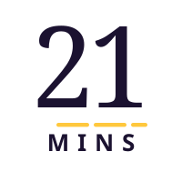
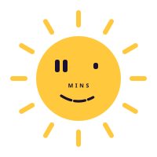
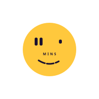
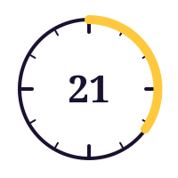
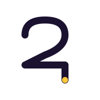
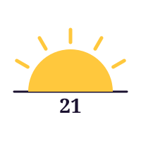
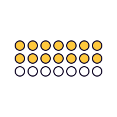

Brand handoff · v1.0
Locked-in marks for the parent and kidsnews vertical, plus tokens, fonts, and archived explorations. Everything Claude Code needs to ship the site.

21mins-mark.svg · light
kidsnews-mark.svg · light
kidsnews-mark-dark.svg · darkWalked away from these but kept for reference if a future vertical needs a different metaphor.

Clock arc
Loop
Sunrise
Dot grid
Open README.md first. tokens.css drops into your global stylesheet;
tokens.json is the same data for build tools (Tailwind, Style Dictionary, etc.).
The two React components in react/ are the canonical mark implementations —
use them in product. The static SVGs in assets/ are for email, OG images,
print, and any non-React surface.